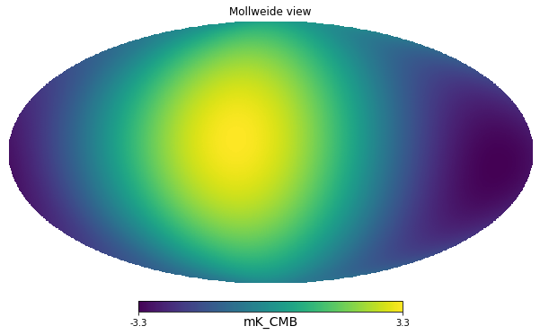

import healpy as hp
import numpy as np
import matplotlib.pyplot as plt
from pysm3 import units as u
import pysm3 as pysm
%matplotlib inlinedip = hp.synfast([0,1], lmax=1, nside=128) * u.V/home/zonca/zonca/p/software/healpy/healpy/sphtfunc.py:438: FutureChangeWarning: The order of the input cl's will change in a future release.
Use new=True keyword to start using the new order.
See documentation of healpy.synalm.
category=FutureChangeWarning,
/home/zonca/zonca/p/software/healpy/healpy/sphtfunc.py:824: UserWarning: Sigma is 0.000000 arcmin (0.000000 rad)
sigma * 60 * 180 / np.pi, sigma
/home/zonca/zonca/p/software/healpy/healpy/sphtfunc.py:829: UserWarning: -> fwhm is 0.000000 arcmin
sigma * 60 * 180 / np.pi * (2.0 * np.sqrt(2.0 * np.log(2.0)))hp.mollview(dip, unit=dip.unit)
We measure the sky with out broadband instrument, we assume we only measure the CMB solar dipole, initially the units are arbitrary, for example Volts of our instrument.
Next we calibrate on the solar dipole, which is known to be 3.3 mK.
calibration_factor = 2 * 3.3 * u.mK_CMB / (dip.max() - dip.min())calibration_factor\(3.9033114 \; \mathrm{\frac{mK_{{CMB}}}{V}}\)
calibrated_dip = calibration_factor * dipcalibrated_dip\([0.44224864,~0.41525913,~0.40329058,~\dots,~-0.43028009,~-0.44224864,~-0.41525913] \; \mathrm{mK_{{CMB}}}\)
hp.mollview(calibrated_dip, unit=calibrated_dip.unit)
First we simplify and consider a delta-frequency instrument at 300 GHz
center_frequency = 300 * u.GHzdip_peak = calibrated_dip.max()calibrated_dip.max()\(3.3 \; \mathrm{mK_{{CMB}}}\)
calibrated_dip.max().to(u.mK_RJ, equivalencies=u.cmb_equivalencies(center_frequency))\(0.47252855 \; \mathrm{mK_{{RJ}}}\)
calibrated_dip.max().to(u.MJy/u.sr, equivalencies=u.cmb_equivalencies(center_frequency))\(1.3065993 \; \mathrm{\frac{MJy}{sr}}\)
Next we assume instead that we have a broadband instrument, of 20% bandwidth, with uniform response in that range. For simplicity, we only take 4 points.
freq = [270, 290, 310, 330] * u.GHzweights = [1, 1, 1, 1]weights /= np.trapz(weights, freq)weights\([0.016666667,~0.016666667,~0.016666667,~0.016666667] \; \mathrm{\frac{1}{GHz}}\)
The instrument bandpass is defined in power so we can transform our signal in MJy/sr at the 4 reference frequencies, then integrate.
dip_peak_MJysr = dip_peak.to(u.MJy/u.sr, equivalencies=u.cmb_equivalencies(freq))dip_peak_MJysr\([1.4642815,~1.363255,~1.2471396,~1.1232462] \; \mathrm{\frac{MJy}{sr}}\)
integrated_SR = np.trapz(dip_peak_MJysr * weights, freq)integrated_SR\(1.3013861 \; \mathrm{\frac{MJy}{sr}}\)
This is different than assuming uniform bandpass in \(K_{CMB}\), where instead we would recover the same result of the delta-bandpass:
np.trapz(dip_peak * weights, freq)\(3.3 \; \mathrm{mK_{{CMB}}}\)
SR = u.MJy/u.srWe use the PySM 3 function to compute unit conversion given a bandpass
$ [unit_{out}] = [unit_{in}] { C_{unit_{out}}{Jy~sr{-1}}() g() d} $
which comes from equating in power:
$ [unit_{out}]{ C_{unit_{out}}{Jy~sr{-1}}() g() d} = [unit_{in}]C_{unit_{in}}{Jy~sr{-1}}() g() d$
SR\(\mathrm{\frac{MJy}{sr}}\)
pysm.utils.bandpass_unit_conversion(freq, weights=weights, output_unit=u.mK_CMB, input_unit=SR)\(2.5357578 \; \mathrm{\frac{mK_{{CMB}}\,sr}{MJy}}\)
integrated_SR * _\(3.3 \; \mathrm{mK_{{CMB}}}\)
1 * u.mK_CMB / (1 * SR)\(1 \; \mathrm{\frac{mK_{{CMB}}\,sr}{MJy}}\)
We can doublecheck the implementation of the PySM function by executing it here:
K_CMB_to_MJysr = ((1*SR).to(u.mK_CMB, equivalencies=u.cmb_equivalencies(freq)))/(1*SR)K_CMB_to_MJysr\([2.253665,~2.420677,~2.646055,~2.9379134] \; \mathrm{\frac{mK_{{CMB}}\,sr}{MJy}}\)
Integrating the K_CMB_to_MJysr conversion factor is wrong, we always need to do the integral in power, therefore we integrate the inverse and then take its inverse.
np.trapz(K_CMB_to_MJysr * weights, freq)\(2.5541738 \; \mathrm{\frac{mK_{{CMB}}\,sr}{MJy}}\)
1/np.trapz(1/K_CMB_to_MJysr * weights, freq)\(2.5357578 \; \mathrm{\frac{mK_{{CMB}}\,sr}{MJy}}\)